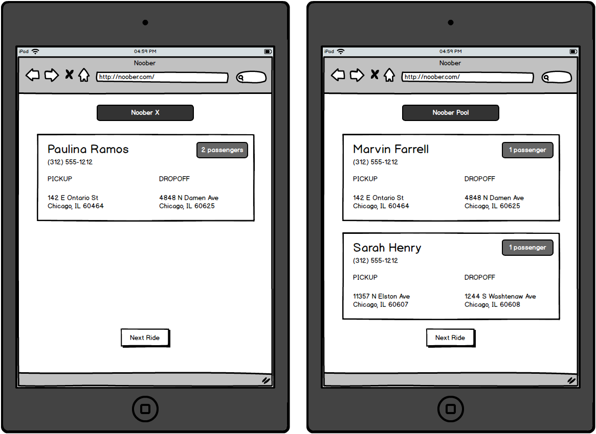

Your hot new rideshare startup, Noober, is about to launch its MVP. Unfortunately, your front-end JavaScript engineer has just left the company to pursue her passion for unicorn farming. You're left responsible for taking data generated by the back-end development team and applying it to the application that is used by end-users. Take a random ride and show it on the driver dashboard; this application will be used by a driver to find a new ride that is waiting to be picked up.
Begin by heading over to the starter project – select "Use this template", then create a repository in your own GitHub account called hw3. Clone this project and open it in VSCode.
Open index.html in Chrome. You'll notice a page with hard-coded data, i.e. every time you refresh the page, you'll get the same result. Your goal is to use what you know about JavaScript to make the page dynamic.
You should set all of the variables listed in noober.js. Setting each variable will automatically replace a value on the page. Try setting each with a simple let statement to see what part of the page changes. For example, the following code will change the top title to "Tacos":
levelOfService = 'Tacos'
Each time the end-user clicks "Next Ride", display a new, randomized ride. The random ride data is already provided – simply use the ride variable. The provided code writes out the value of this variable to the JavaScript Console in Chrome – inspect the structure of this data using the Console. Your job is to extract the data from this Object, and place it in the various places needed to show it to the end-user.

With Noober, riders must specify the following data/criteria for their requested ride:
In addition, single riders (i.e. number of passengers is only 1) can request to be part of a "Noober Pool". The back-end development team has already aggregated this data; it's implied that "Noober Pool" is requested when there is more than one rider specified in the ride data. The remainder of the business logic is as follows:
All your work should take place in noober.js; i.e. that should be the only file that's modified from the original project template. Your finished product should live in your GitHub account at https://github.com/<your GitHub username>/hw3, and this URL should be submitted as the "website URL" for this assignment in Canvas.